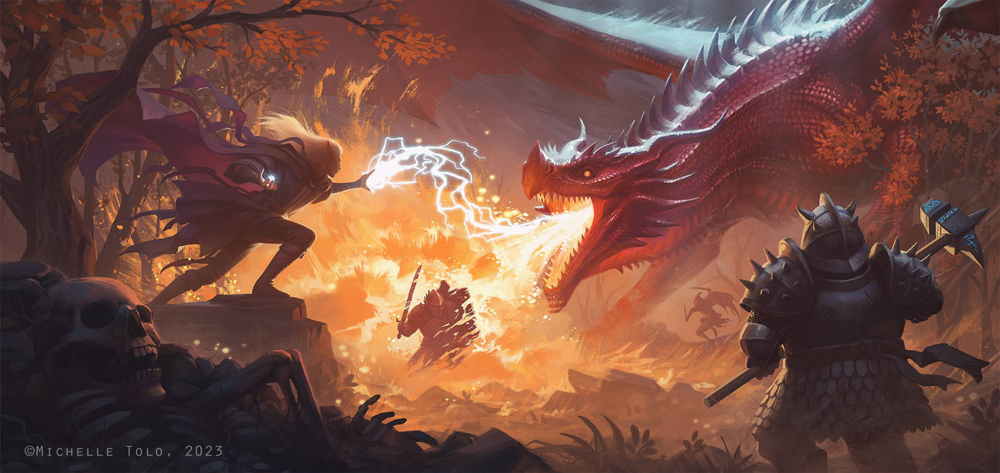

| clases | subclases |
|---|---|
| Barbaro — | Path of the Berserker, Path of the Wild Heart, Path of the World Tree, Path of the Zealot |
| Bardo — | College of Dance, College of Glamour, College of Lore, College of Valor. |
| Clerigo — | Life Domain, Light Domain, Trickery Domain, War Domain. |
| Druida — | Circle of the Land, Circle of the Moon, Circle of the Sea, Circle of Stars. |
| Guerrero — | Battle Master, Champion, Eldritch Knight, Psi Warrior. |
| Monje — | Warrior of Mercy, Warrior of Shadow, Warrior of the Elements, Warrior of the Hand. |
| Paladin — | Oath of Devotion, Oath of Glory, Oath of the Ancients, Oath of Vengeance. |
| Explorador — | Beast Master, Fey Wanderer, Gloom Stalker, Hunter. |
| Picaro — | Arcane Trickster, Assassin, Soulknife, Thief. |
| Hechicero — | Aberrant Sorcery, Clockwork Sorcery, Draconic Sorcery, Wild Magic Sorcery. |
| Brujo — | Archfey Patron, Celestial Patron, Fiend Patron, Great Old One Patron. |
| Mago — | Abjurer, Diviner, Evoker, Illusionist. |